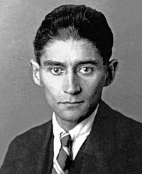
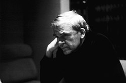

Франц Кафка

Франц Кафка - австрійський письменник, один з фундаменалістів модерної прози. Творча спадшина письменника включає в себе три незакінчених романи, кілька збірок новел і притч, афоризми, листи і щоденники. За життя опублікував лише кілька збірок і оповіань, які не притягали особливої уваги до його творчості. Основна слава прийшла посмертно, коли всупереч заповіту, його душоприказник не став знищувати рукописи, а опублікував їх.
Народився в Празі 3 липня 1883 року в єврейській родині. Батько був комерсантом із середнім достатком. Навчався в початковій школі, після закінчив гімназії в 1901 році. Потім він вступив до Карлового університету в Празі, після чого став доктором права.
У 1906 році отримав ступінь доктора юридичних наук, почав кар’єру в страховій фірмі. Взагалі завжди дуже роздратовано ставився до своєї роботи і не вважав її чимось важливим. Більшу частину зусиль докладав до літературної діяльності. Перебував на дрібних посадах до самого відходу на пенсію.
У 1909 році були надруковані два уривки з незакінченого оповідання «Опис однієї боротьби».
1911 рік – подорожував по Італії, Франції, Швейцарії.
У 1912 році почав роботу над романом «Зниклий безвісти» (пізніше названим «Америка»), написав новели «Вирок» і «Перевтілення».
Публікація збірника «Споглядання» припала на 1913. А в 1914 році почав писати роман «Процес». У 1917році захворів на туберкульоз.
У 1919 році була опублікована збірка новел «Сільський лікар», і було написано оповідання «Лист батькові».
У 1922 році через хворобу, був змушений вийти на пенсію. Почав роботу над романом «Замок», підготував до друку збірку новел «Голодарь», повість «Дослідження одного собаки», оповідання «Нора».
3 червня 1924 помер в санаторії поблизу Відня.
Лише у 2004 році (через 80 років після його смерті) місто віддало данину його досягненням, спорудивши відмітну статую на вулиці Душні в районі Старого міста. Він міг вільно вогорити чеською, але німецька булайого рідною мовою, і цією мовою він вирішив писати.
Magnus opus
- "Перевтілення"
- "Процес"
- "Замок"
- "Before The Lav"
- "Зниклий безвісти"
Мілан Кундера

Інший чеський літературний велич, Мілан Кундера народився 1 квітня 1929 року у чехословачиині також відчував проблеми, подібні до Кафки. Значна частина його творів була написана французькою, оскільки Кундера Фактично проживав у Франції протягом сімдесяти років.
Знову багато його співгромадян бачили його в менш сприятловаму світлі, як це часто траляється з уміма, хто міг уникнути комуністичної ери у своїй країні. Найвідоміший твір Кундери, "Нестерпна легкість буття", був опублікований у 1984 році, але на чеську мову надійшов лише у 2006 році, частково через незадоволення автора всіма попередніми спробами його перекладу.
Потім, у жовтні 2008 року, нувідомий письменник потрапив у середину медіа-шторму, коли чеський журнал опублікував матеріал, в якому стверджуєттся, що він був комуністичним інформатором. Кундера рішуче спростував ці звинувачення.
Помер кундера 11 липня 2023 року у Парижі.
Magnus opus
- "Жарт"
- "The Book of Laughter and Forgetting
- "Нестерпна легкість буття"
- "Безсмертя"
- "The Arth of the Novel"
- "Life is Elsewhere"
- "Вальс на прощання"
Інші чеські літературні письменники
Щоб краще зрозуміти сприйняття чехами якісної чеської літератури, варто ознайомитися з деякими іншими, менш відомими творами. Єврейська громада початку двадцятого століття, яка була вражена проблемами, породила інших великих письменників і Кафку. Серед них Макс Брод (кому було наказано знищити твори Кафки після його смерті) і романісти Густав Мейрінк (який написав "Голема") і Поль Леппін (який написав "Подорож Северіна в темряву"), які обидва написали страхітливі розповіді про Останні дні Габсбурзького режиму. Ті, хто пережив Голокост, такі як Арношт Лустіг і Джіфф Вейл, колишній досі невід'ємний учасник плідної театральної сцени Прази, дотримувалися цієї традиції.
В інших місцях цього жанру зверніть увагу на політичні романи Івана Кліми, революційну творчість Людвіка Вакуліка та альтернативні вірші Іржфа Коларжа, і це лише деякі з них.
Особливо слід звернути увагу на Ярослава Гашека, який створив, мабуть, найвідомішого персонажа чеських романів: доброго солдата Швейка зі своєї однойменної книги, написаної в 1923 році. Дія під час Першої світової війни розповідає про досвід Швейка, військового ветерана, який з таким ентузіазмом виконує накази, що багато хто не впевнений, чи він спритно намагається повалити могутній австро-угорський режим, чи він просто дурень.
Чехам сподобалася антиістеблішментська налаштованість героя книги, і багато ресторанів і громадських будинків по всьому місту посилаються на нього. І автор, і персонаж також мали астероїди: 7896 Швейк і 2734 Гашек, названі на честь. Твори колишнього президента і драматурга-дисидента Вацлава Гавела також надихають. Дії Гавела під час комуністичного режиму часто призводили до тюремних вироків. У пізніші, більш прогресивні часи листи, які він писав своїй дружині з цієї епохи, продавалися як: "Листи до Ольги". Після того, як він пішов зі своєї професії в Празькому замку, метушливий і замкнутий письменник знову знайшов широку аудиторію, повернувшись до свого письма.